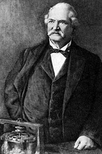
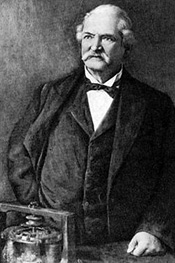

Storia del Motore Elettrico
La storia dei motori elettrici è lunga, Incomincia intorno al 600 a.C., quando il filosofo greco Talete si accorse che dei pezzetti di ambra, strofinati tra loro, acquisivano la proprietà di attrarre chicchi di grano.
Alessandro Volta, nel 1800, inventò la pila, un apparecchio per produrre e immagazzinare corrente elettrica.
Nel 1823 l’inglese William Sturgeon, avvolgendo un filo metallico intorno a un pezzo di ferro e facendovi scorrere corrente elettrica, scoprì che si otteneva una calamita artificiale, che però perdeva la sua forza di attrazione nel momento in cui la corrente veniva interrotta. Nacque così l'elettrocalamita.
Nel 1858 la prima intuizione della spira, che diventerà la base per la realizzazione della dinamo, permise a Pacinotti di costruire il primo generatore dinamo-elettrico, considerato la prima macchina generatrice di elettricità.
Successivamente al lavoro di Strugeon, l'americano Thomas Davenport, costruì un motore a corrente continua migliorato, con l'intenzione di usarlo per scopi pratici.
 
